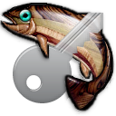

About KeyFish

KeyFish lets you generate a unique password for each web site you visit. It
works by combining the name of the site (usually the domain name shown in the
location bar) with a secret password (known only to you), using the HMAC/SHA256
algorithm.
The output of the algorithm is turned into a password by mapping each byte
of the HMAC value to a letter, digit, or punctuation mark. Changing the name
of the site or the secret password will change the password you get.
- Site. The name of the site to create a password for.
When you open KeyFish, it copies the domain name from the location bar, but
you may type anything you want. Choose a saved site from the menu just below,
or select Copy URL to copy the URL from the browser's
location bar.
- Master key. This is where you enter your secret password.
The password can be the same for many different sites, but should never be shared
with anybody else. Enable Show Password if you want to see what you typed.
- Password. When you click Generate, the
result is copied to this field, and also to the clipboard.
Advanced Settings
By default, KeyFish generates a long password using a mix of letters and
digits.
Some sites have special password rules that don't work with the default
settings, however. If a site does not accept the password KeyFish gave you,
click open the Advanced pane.
- Use punctuation. If this is checked, the passwords will
contain punctuation characters as well as letters and digits.
- Length. Chooses how many characters you would like
KeyFish to use in each password it generates.
- Salt. An extra value added to the site name. This will
change the password you get for a given site and master key. You can usually
leave this blank.
- Format. For sites with very picky password rules, you
can enter a password format here. Use "A" to choose an uppercase letter, "a"
to choose a lowercase letter, "*" to choose an arbitrary letter of either
case, "?" to choose a punctuation mark, "1" to choose a digit, e.g.,
"Aaa11?**11".
To construct a password, KeyFish replaces these with characters of the
specified kind based on the site name and secret key.
You can usually leave this blank.
To change the default settings, click Save Defaults (when
the Site field is empty). Otherwise, you can choose Save
sitename to save your specific settings for that site, or
Clear sitename to revert to the defaults.
You can save your master key by clicking Save Master Key.
If you do this, your master key will be stored in the browser's local storage.
Anyone with physical access to your computer could steal your key if you do
this. Click Clear Master Key to remove a saved master
key.